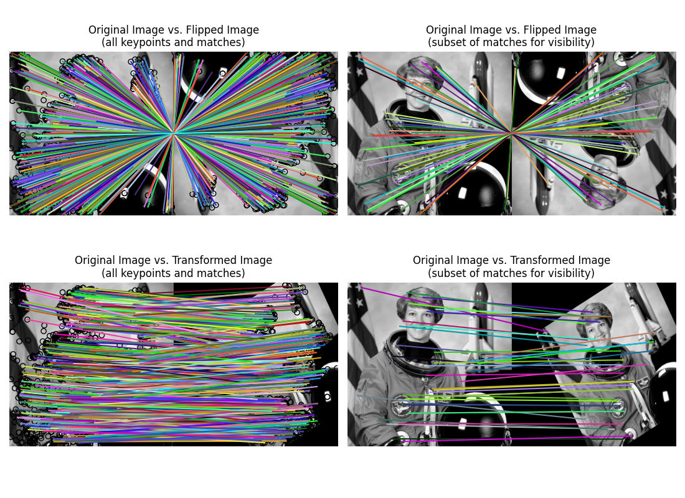

Source
SourceNote
Click here to download the full example code or to run this example in your browser via Binder
SIFT feature detector and descriptor extractor¶
This example demonstrates the SIFT feature detection and its description algorithm.
The scale-invariant feature transform (SIFT) [1] was published in 1999 and is still one of the most popular feature detectors available, as its promises to be “invariant to image scaling, translation, and rotation, and partially in-variant to illumination changes and affine or 3D projection” [2]. Its biggest drawback is its runtime, that’s said to be “at two orders of magnitude” [3] slower than ORB, which makes it unsuitable for real-time applications.
References¶
import matplotlib.pyplot as plt
from skimage import data
from skimage import transform
from skimage.color import rgb2gray
from skimage.feature import match_descriptors, plot_matches, SIFT
img1 = rgb2gray(data.astronaut())
img2 = transform.rotate(img1, 180)
tform = transform.AffineTransform(scale=(1.3, 1.1), rotation=0.5,
translation=(0, -200))
img3 = transform.warp(img1, tform)
descriptor_extractor = SIFT()
descriptor_extractor.detect_and_extract(img1)
keypoints1 = descriptor_extractor.keypoints
descriptors1 = descriptor_extractor.descriptors
descriptor_extractor.detect_and_extract(img2)
keypoints2 = descriptor_extractor.keypoints
descriptors2 = descriptor_extractor.descriptors
descriptor_extractor.detect_and_extract(img3)
keypoints3 = descriptor_extractor.keypoints
descriptors3 = descriptor_extractor.descriptors
matches12 = match_descriptors(descriptors1, descriptors2, max_ratio=0.6,
cross_check=True)
matches13 = match_descriptors(descriptors1, descriptors3, max_ratio=0.6,
cross_check=True)
fig, ax = plt.subplots(nrows=2, ncols=2, figsize=(11, 8))
plt.gray()
plot_matches(ax[0, 0], img1, img2, keypoints1, keypoints2, matches12)
ax[0, 0].axis('off')
ax[0, 0].set_title("Original Image vs. Flipped Image\n"
"(all keypoints and matches)")
plot_matches(ax[1, 0], img1, img3, keypoints1, keypoints3, matches13)
ax[1, 0].axis('off')
ax[1, 0].set_title("Original Image vs. Transformed Image\n"
"(all keypoints and matches)")
plot_matches(ax[0, 1], img1, img2, keypoints1, keypoints2, matches12[::15],
only_matches=True)
ax[0, 1].axis('off')
ax[0, 1].set_title("Original Image vs. Flipped Image\n"
"(subset of matches for visibility)")
plot_matches(ax[1, 1], img1, img3, keypoints1, keypoints3, matches13[::15],
only_matches=True)
ax[1, 1].axis('off')
ax[1, 1].set_title("Original Image vs. Transformed Image\n"
"(subset of matches for visibility)")
plt.tight_layout()
plt.show()
Total running time of the script: ( 0 minutes 2.704 seconds)